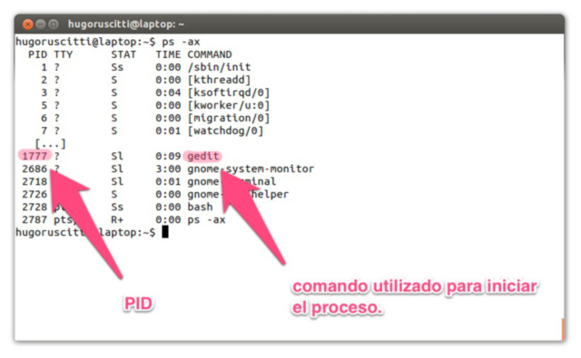

Administrador de Sistemas GNU/Linux
Índice
- Filosofía UNIX
- Linux por dentro, jerarquías de directorios
- Todo es un archivo, conociendo
/procy/dev - Entrada estándar, Salida estándar y Tuberías
- Descriptores de archivos
- Enviar la salida estándar a un archivo
- Enviar la salida de errores a un archivo
- Enviar la salida estándar y la salida de errores a un mismo archivo
- Enviar la salida de errores a la salida estándar
- Enviar la salida de estándar a
/dev/null - Enviar la salida de estándar y la salida de errores a
/dev/null - Enviar un archivo a la entrada estándar
- Enviar la salida estándar a un archivo y a la salida estándar
- Enviar la salida estándar de un comando como la entrada estándar de otro comando
stdoutstderr- pipes
- Comandos básicos de terminal
- Acceso remoto usando ssh
- Entornos gráficos, ejecución remota de aplicaciones gráficas
- Procesos
- Automatizando tareas:
sleep,jobs,crontab
Filosofía UNIX
UNIX incorpora un conjunto de herramientas que guardan cierta analogía con una navaja multiusos. Son simples, pero hacen muy bien su trabajo. En lugar de construir programas muy complejos, UNIX proporcionaba muchas pequeñas herramientas, y un esquema para poder combinarlas de forma efectiva. Este diseño escala muy bien, permitiendo al sistema crecer, incorporar nuevas herramientas y, a la vez, ser compatible hacia atrás.
Los objetivos con que se creó determinaron una filosofía de UNIX caracterizada por:
- comandos cortos, simples, específicos y muy eficientes, que "hacen una sola cosa pero la hacen muy bien".
- entrada y salida estandarizadas que permiten la interconexión de comandos. Esto se llama entubamiento (pipelining): la salida de un comando es tomada por el siguiente como entrada.
Algunas directivas son:
- Escribe programas que hagan una sola cosa y la hagan bien: esto quiere decir que los programas deben de ser lo más atómicos posible y que se compruebe mucho su rendimiento y funcionamiento para hacerlo lo mejor posible.
- Escribe programas que trabajen juntos: de nada sirve escribir programas que sirvan para una tarea específica y que, después, cuando esa tarea se modifique de cierta forma, haya que reescribir todo el programa.
- Es mejor dividir el problema en varios programas y después desechar o reescribir solo uno de esos pequeños programas, cuando se necesite, o incluso hacer nuevos.
- Escribe programas que manejen flujos de texto, pues esa es la interfaz universal: todo lo que se hace con entrada y salida en formato textual es más fácil de enlazar con otros programas, así como reutilizarla en el pasado, presente y futuro.
En estos conceptos se basa la mayoría del software libre existente,
por lo que servidores como sendmail o postfix, están diseñados en
pequeños servidores y/o programas que hacen partes de todo un proceso
y, mediante sus ficheros de configuración, se pueden enlazar de una u
otra forma, así como usar otros programas y/o servidores en lugar de
los que vienen por defecto y, así, extender su funcionalidad.
Sobre filosofía Unix, de una forma más extensa, Mike Gancarz, escribe las siguientes líneas:
- Lo pequeño es hermoso.
- Haz que cada programa haga una sola cosa, pero que la haga bien.
- Construye un prototipo lo antes posible.
- Elige portabilidad sobre eficiencia.
- Guarda los datos en archivos de texto plano.
- Aprovecha funcionalidades del software.
- Usa scripts de shell para aumentar la funcionalidad y portabilidad.
- Evita interfaces de usuario captivas.
- Haz de cada programa un filtro.
La filosofía UNIX supone crear programas rápidos, simples, con poca intervención por parte del usuario, o en caso de necesitarla, esta se produzca al principio o lo más mínima posible. Esta se acopla perfectamente a las necesidades de computación de los laboratorios científicos, puesto que Unix fue originalmente desarrollado en uno de estos.
A continuación algunas premisas:
- Que cada programa realice únicamente la tarea para la que fue creado y la haga bien.
- Para llevar a cabo una nueva tarea escribe un programa nuevo. No compliques uno viejo añadiendo nueva funcionalidad.
- Escribe tu programa teniendo en cuenta que su salida probablemente sea la entrada de otro programa.
- Guarda los datos en archivos de texto plano. Si necesitas seguridad, confía en los permisos.
- Usa nombres cortos y en minúscula.
- En la manera de lo posible haz que el usuario suministre los datos por línea de comandos en la llamada.
- Haz partes simples conectadas mediante interfaces limpias y bien definidas.
- Céntrate en los datos.
- Claridad mejor que complejidad. La solución más simple es frecuentemente la mejor.
- Portabilidad mejor que eficiencia.
- Piensa en paralelo. Hay otros procesos en el mundo, incluso instancias de tu mismo programa funcionando al mismo tiempo.
- Hacer programas grandes, solo cuando se demuestre que no se puede realizar con uno pequeño.
- Si no hay nada interesante que decir, que el programa mejor no diga nada.
- Para cada problema existen múltiples soluciones.
- Diseña pensando en el futuro (esta cercano). Esto nos ofrece compatibilidad y mayor tiempo de utilización.
- Programa de abajo hacia arriba y de conocimiento pragmático.
- Programa basado en el conocimiento Empírico o Experiencia.
- No se encuentra en los métodos y las normas oficiales, sino en el medio-reflexivo implícito, el conocimiento.
En resumidas cuentas la filosofía Unix se puede describir como bien lo dice Doug Mcllroy:
"Escribe programas que hagan una cosa y la hagan bien, que trabajen en armonía con otros y que manejen flujos de texto, pues esta es una interfaz universal." - Doug Mcllroy
"Aquellos que no pueden entender UNIX, están condenados a reinventarlo, pobremente." - Henry Spencer, 1987
Linux por dentro, jerarquías de directorios
/ +-- bin binarios +-- boot inicio del sistema, imágenes del kernel +-- dev dispositivos, presentes y futuros +-- etc configuraciones +-- home directorios personales de los usuarios +-- lib bibliotecas +-- lost+found archivos y/o cadenas perdidas +-- media dispositivos extraerles +-- mnt dispositivos montados +-- opt binarios fuera de la distro +-- proc procesos en ejecución +-- root directorio personal del /root/ +-- run archivos de procesos en ejecución +-- sbin binarios del sistema +-- selinux secure linux +-- srv servicios ej: ftp +-- sys system +-- tmp temporales +-- usr archivos compartidos +-- var archivos que varían de tamaño, ej: logs
Todo es un archivo, conociendo /proc y /dev
/proc
Es un pseudo-sistema de ficheros que se usa como interfaz para las estructuras de datos del núcleo en lugar de leer e interpretar /dev/kmem. La mayor parte de este sistema de ficheros es de sólo lectura, pero algunos ficheros permiten cambiar variables del núcleo.
/proc/partitions
Podemos ver las particiones que leyó el kernel:
cat /proc/partitions
major minor #blocks name 8 0 488386584 sda 8 1 52428800 sda1 8 2 52428800 sda2 8 3 383527960 sda3 11 0 1048575 sr0 254 0 383525912 dm-0
/proc/uptime
El uptime de nuestro equipo puede ser consultado directamente en
/proc/uptime,
cat /proc/uptime
1901728.32 3010323.20
Si utilizamos el comando uptime, éste lee el valor expresado en
epoc (segundos que pasaron desde el 01/01/1970) y nos informa
hace cuántos días y horas nuestro servidor está prendido, además
de informar otros valores, como la cantidad de usuarios y el
average:
uptime
10:53:05 up 22 days, 15 min, 6 users, load average: 1,63, 1,70, 1,58
/dev
Aquí se encuentran todos los dispositivos del sistema, presentes y futuros.
/dev/null
Este dispositivo es muy especial y sumamente útil, es un agujero
negro, todo lo que se envía a /dev/null desaparece
ls -lh /dev/null
crw-rw-rw- 1 root root 1, 3 ene 20 10:37 /dev/null
Si enviamos algo y luego miramos con un ls no vemos que se
incremente el tamaño del archivo:
echo "hola" >/dev/null ls -lh /dev/null
crw-rw-rw- 1 root root 1, 3 ene 20 10:37 /dev/null
/dev/sdX
Los discos están identificados con el prefijo sd, luego una letra
a, b, c, etc y finalmente un número 1, 2, 3, etc que
identifica la partición:
Listamos el disco sda
ls /dev/sda*
/dev/sda /dev/sda1 /dev/sda2 /dev/sda3
Vemos si esta montado sda:
mount | grep sda
/dev/sda1 on /mnt/sda1 type ext4 (rw,relatime,user_xattr,barrier=1,data=ordered)
Visualizamos el espacio disponible:
df -h | grep sda
/dev/sda1 50G 14G 34G 29% /mnt/sda1
Entrada estándar, Salida estándar y Tuberías
Descriptores de archivos
Existen 3 descriptores básicos de archivos:
0 |
stdin |
entrada estándar |
1 |
stdout |
salida estándar |
2 |
stderr |
salida de errores |
Es posible redireccionar cada uno de éstos descriptores mediante los
operadores >, < y |
Enviar la salida estándar a un archivo

Enviar la salida de errores a un archivo

Enviar la salida estándar y la salida de errores a un mismo archivo

Enviar la salida de errores a la salida estándar

Enviar la salida de estándar a /dev/null
Enviar la salida de estándar y la salida de errores a /dev/null

Enviar un archivo a la entrada estándar

Enviar la salida estándar a un archivo y a la salida estándar

Enviar la salida estándar de un comando como la entrada estándar de otro comando

stdout
Buscar el texto model en el archivo /proc/cpuinfo y enviar el
resultado a un nuevo archivo llamado /tmp/cpu que contendrá
únicamente las líneas que coinciden con el texto model:
grep model /proc/cpuinfo > /tmp/cpu cat /tmp/cpu
model : 28 model name : Intel(R) Atom(TM) CPU D425 @ 1.80GHz model : 28 model name : Intel(R) Atom(TM) CPU D425 @ 1.80GHz
Buscar el texto cache en el archivo /proc/cpuinfo y agregar el
resultado al archivo /tmp/cpu
grep cache /proc/cpuinfo >> /tmp/cpu cat /tmp/cpu
model : 28 model name : Intel(R) Atom(TM) CPU D425 @ 1.80GHz model : 28 model name : Intel(R) Atom(TM) CPU D425 @ 1.80GHz cache size : 512 KB cache_alignment : 64 cache size : 512 KB cache_alignment : 64
stderr
Enviar la salida con errores a /dev/null:
xkcd 2>/dev/null
Redireccionar la salida con errores a la salida estandar:
echo "xkcd" | grep 2>&1
pipes
El símbolo | es usado para redireccionar la salida de un comando
a la entrada de otro comando.
Ejemplo:
Lista el directorio /var/log ordenando los archivos más nuevos
al principio y muestra sólo las primeras 10 líneas mediante el
comando head
ls -lht /var/log | head
total 14M -rw-rw-r-- 1 root utmp 107K feb 10 20:46 wtmp -rw-r----- 1 root adm 769K feb 10 20:45 mail.info -rw-r----- 1 root adm 769K feb 10 20:45 mail.log -rw-r----- 1 root adm 356K feb 10 20:45 syslog -rw-r----- 1 root adm 337K feb 10 20:45 auth.log -rw-r----- 1 root adm 3,1K feb 10 19:49 messages -rw-r----- 1 root adm 2,9K feb 10 19:49 kern.log -rw-r--r-- 1 root root 29K feb 10 16:42 Xorg.0.log -rw-r----- 1 root adm 1,9K feb 10 16:42 daemon.log
lista el directorio /var/log mostrando el tamaño de cada
archivo, se filtra el resultando por Megabytes (M), luego
ordena de mayor a menor y finalmente limita la lista a los
primeros 10 archivos que más espacio ocupan, incluyendo el total
del directorio:
cd /var/log;du -ch * | grep M | sort -nr | head
496M total 468M atop 15M installer 14M installer/cdebconf 3,3M mail.log.1 3,3M mail.info.1 1,5M auth.log.1
Comandos básicos de terminal
Directorios:
El separador de archivos y directorios es la barra /
ejemplos:
/ directorio raíz (*root*) /etc directorio usr (sub-directorio de la raíz =/=) /etc/apache2 apache2 subdirectorio de /etc
Moviéndose en el sistema de archivos:
pwd
Muestra el directorio actual.
cd
Cambia al directorio definido en HOME
cd /etc/php5
Cambia el directorio actual a /etc/php5
cd apache2
Cambia al subdirectorio apache2 del directorio actual
cd ..
Cambia al directorio inmediato superior
cd $HOME
Cambia al directorio definido en la variable HOME
cd ~osiris
Cambia al directorio del usuario osiris
Listar directorios:
ls -l
Listar en formato ancho, de esta manera se visualizan gran parte de los atributos de cada archivo y/o directorio
$ ls -l -rw-rw-r-- 1 osiris www-data 612 nov 1 19:29 redes.html -rw-rw-r-- 1 osiris www-data 11457 nov 1 19:31 scrum.html -rw-rw-r-- 1 osiris www-data 6556 abr 24 2013 ssh.org -rw-rw-r-- 1 osiris www-data 609 abr 24 2013 graphviz.org -rw-rw-r-- 1 osiris www-data 17326 abr 24 2013 gnuplot.org -rw-rw-r-- 1 osiris www-data 11457 nov 1 19:31 tmp ^ ^ ^ ^ ^ ^ ^ ^ ^ ^ ^ | | | | | | | | | | | | | | | | propietario grupo tamaño fecha hora nombre | | | | número de links al archivo o contenido del directorio | | | permisos para todos | | permisos para miembros del grupo | permisos para el propietario del archivo: | r lectura | w escritura | x ejecutar | - ninguno tipo de archivo: - archivo normal d directorio l enlace simbolico
ls
Listar directorio actual
ls -a
Listar directorio actual incluyendo archivos ocultos (comienzan con
.)
Cambiando permisos y atributos
r = read 4 w = write 2 x = execute 1 propietario 7 = rwx lectura, escritura y ejecución grupo 5 = rx- lectura y ejecución todos 0 = --- ningún permiso
Es necesario ser el propietario del archivo/directorio (o root)
para realizar el cambio de usuario o grupo.
chmod 750 archivo
Listamos los permisos del archivo ~/.bash_history
ls -l ~/.bash_history
-rwxr-x--- 1 osiris osiris 326316 feb 10 21:55 /home/osiris/.bash_history
Cambiamos el permiso a 750 y volvemos a listar:
chmod 750 ~/.bash_history ls -l ~/.bash_history
-rwxr-x--- 1 osiris osiris 326316 feb 10 21:55 /home/osiris/.bash_history
Finalmente cambiamos el permiso a 600 y volvemos a listar:
chmod 600 ~/.bash_history ls -l ~/.bash_history
-rw------- 1 osiris osiris 326316 feb 10 21:55 /home/osiris/.bash_history
chgrp grupo archivo
Establece el grupo al archivo
chown usuario archivo
Establece el usuario como propietario del archivo
chown usuario archivo
Establece el usuario como propietario del directorio y todo su contenido recursivamente.
Moviendo, renombrando y copiando archivos:o
Copiamos el archivo ~/.bash_history a ~/.bash_history.bak y
verificamos que sea igual:
ls -lh ~/.bash_history cp ~/.bash_history ~/.bash_history.bak ls -lh ~/.bash_history.bak md5sum ~/.bash_history ~/.bash_history.bak
-rw------- 1 osiris osiris 310K feb 11 11:07 /home/osiris/.bash_history -rw------- 1 osiris osiris 310K feb 11 11:07 /home/osiris/.bash_history 7b862a967fc7096882583f9a6f662230 /home/osiris/.bash_history 7b862a967fc7096882583f9a6f662230 /home/osiris/.bash_history.bak
#+END_SRC
Movemos el archivo ~/.bash_history.bak a ~/historial.bak:
mv -vi ~/.bash_history.bak ~/historial.bak ls -l ~/.bash_history ~/historial.bak
«/home/osiris/.bash_history.bak» -> «/home/osiris/historial.bak» -rw------- 1 osiris osiris 316801 feb 11 11:07 /home/osiris/.bash_history -rw------- 1 osiris www-data 316801 feb 11 11:13 /home/osiris/historial.bak
Renombramos el archivo ~/historial.bak a ~/historial.log
mv -vi ~/historial.bak ~/historial.log ls -l ~/historial.log
«/home/osiris/historial.bak» -> «/home/osiris/historial.log» -rw------- 1 osiris www-data 316801 feb 11 11:13 /home/osiris/historial.log
Ver y editar arhivos:
cat
cat /etc/issue
Debian GNU/Linux 7.0 \n \l
head
head /proc/meminfo | head
MemTotal: 2062464 kB MemFree: 872100 kB Buffers: 56052 kB Cached: 642468 kB SwapCached: 10928 kB Active: 520204 kB Inactive: 570096 kB Active(anon): 366124 kB Inactive(anon): 211844 kB Active(file): 154080 kB
head -2
head /proc/meminfo | head -2
MemTotal: 2062464 kB MemFree: 871860 kB
tail
tail /etc/passwd
hplip:x:106:7:HPLIP system user,,,:/var/run/hplip:/bin/false pulse:x:107:114:PulseAudio daemon,,,:/var/run/pulse:/bin/false saned:x:108:118::/home/saned:/bin/false Debian-gdm:x:109:119:Gnome Display Manager:/var/lib/gdm3:/bin/false alumno:x:1001:1000:alumno,,,:/home/alumno:/bin/bash osiris:x:2222:33:OSiRiS,,,:/home/osiris:/bin/bash sshd:x:110:65534::/var/run/sshd:/usr/sbin/nologin postfix:x:111:120::/var/spool/postfix:/bin/false rodrigo:x:1002:1001:Rodrigo Fernandez,,,:/mnt/data/musica:/bin/bash davfs2:x:112:122::/var/cache/davfs2:/bin/false
tail -2 /etc/passwd
rodrigo:x:1002:1001:Rodrigo Fernandez,,,:/mnt/data/musica:/bin/bash davfs2:x:112:122::/var/cache/davfs2:/bin/false
sed
cat /etc/issue sed s/"7.0"/"8.0"/g /etc/issue cat /etc/issue
Debian GNU/Linux 7.0 \n \l Debian GNU/Linux 8.0 \n \l Debian GNU/Linux 7.0 \n \l
Expresiones regulares
Se utilizan para definir patrones para la búsqueda y filtrado:
[a-z] Minúsculas
Rango de la a a la z
[A-Z] Mayúsculas
Rango de la A a la Z
[0-9] Números
Rango de 0 a 9
[^..] Patrón distinto
Negación
^ comienzo de línea
$ fin de línea
. cualquier carácter
? cero o una aparición
* ninguna o muchas repeticiones
+ una o más repeticiones
Acceso remoto usando ssh
ssh permite la ejecución remota de un intérprete de comandos
como bash
- Más información en: https://es.wikipedia.org/wiki/Ssh
¿qué ventajas tiene?
- Es seguro porque cifra la conexión y nadie puede ver qué estamos haciendo
- Es rápido porque sólo envía texto, por ello envía menos datos
que si fuera una imagen de pantalla como programas como
vnc - Es versátil porque permite interactuar con otros comandos obteniendo control total de un sistema de manera remota.
¿qué necesito para usar SSH?
- computadora remota
- servidor SSH
- se instala haciendo:
sudo apt-get install openssh-server
- conexión a la red (si es internet mejor!)
- puerto 22 abierto (OjO con el firewall)
- que la computadora esté encendida! (aunque más adelante veremos cómo encender remotamente una computadora)
- servidor SSH
- computadora local
- cliente ssh
- en todos los linux ya está instalado!
- en otros sistemas pod usar PuTTY
- https://es.wikipedia.org/wiki/PuTTY
- dirección IP de computadora remota
- usuario válido de computadora remota
- contraseña del usuario de la computadora remota
- que el puerto 22 de salida esté habilitado en el firewall (aunque hay trucos para saltearlo)
- cliente ssh
¿cómo me conecto por SSH?
En una terminal hay que escribir el comando ssh luego el
usuario remoto, por ejemplo: pepe y separado por un @ arroba
la dirección IP o el dominio (ej: 192.168.0.9 ó osiux.com)
ssh pepe@192.168.0.9
¿qué sucede la primera vez?
Siempre que nos conectamos por primera vez a un servidor SSH, nos aparece un mensaje para que confirmemos la autenticidad de la computadora a la que estamos conectándonos, por ahora somos confiados y le decimos que sí, tipeando yes
osiris@osiux.com:/home/osiris# ssh 192.168.0.9 The authenticity of host 'lab2 (192.168.0.9)' can't be established. RSA key fingerprint is e1:92:a3:54:95:e6:67:b8:89:80:11:02:93:f4:05:36. Are you sure you want to continue connecting (yes/no)?
- Las próximas veces este paso no es necesario.
- Luego ingresamos la contraseña (password en inglés) y si es correcta, ingresamos al sistema remoto!
Listo, entré a la matrix! ¿y ahora?
Ahora podemos hacer todo lo que el usuario que usamos para conectarnos (en este caso pepe) pueda hacer!
Ahora bien, resulta que este sistema remoto cuenta con un administrador, que ve que alguien que no es él, ingresó al sistema con su usuario! Entonces va a matar todos los procesos del usuario pepe, a fin de dejarnos afuera del sistema.
Para esto, utiliza la herramienta htop que muestra todos los
procesos y presionando la tecla F4 nos permite filtrar por la
palabra pepe y luego presionando F9 y eligiendo SIGKILL
termina cada uno de los procesos del usuario pepe.
También se puede hacer desde la consola sin usar htop
root@lab2:/# pkill -u pepe
El intruso va por la revancha!
Como lo dejamos afuera a pepe matando sus procesos, ahora está enojado! Entonces nos empieza a crear carpetas en el Escritorio de la siguiente manera:
pepe@lab2:~/$ cd Escritorio pepe@lab2:~/$ mkdir aguante pepe@lab2:~/$ mkdir la pepe@lab2:~/$ mkdir academia
Si sigue así en algún momento nos va a llenar el Escritorio
Eliminando al intruso!
Matar los procesos activos no es suficiente, debemos eliminar al usuario, para esto hacemos:
root@lab2:/# deluser pepe
- Listo! ahora pepe no puede ingresar a nuestro sistema
El intruso es duro de domar!
Resulta que pepe cuando ingresó la primera vez, fue astuto y cambió la contraseña de root. ¿Y cómo pudo hacerlo? es simple, el usuario pepe tenía permisos para usar sudo que permite convertirse en root (y ser el DIOS del sistema). Para cambiar la password hizo lo siguiente:
pepe@lab2:~/$ sudo -s [sudo] password for pepe: root@lab2:/# root@lab2:/# passwd Cambiando la contraseña de root. Introduzca la nueva contraseña de UNIX: Vuelva a escribir la nueva contraseña de UNIX:
¿Y ahora quién podrá defendernos?
Si un intruso logró obtener cuenta root, estamos fritos! tiene completo control del sistema y sin que nos demos cuenta, salvo que haga algo muy evidente como borrar todo el disco, va a pasar desapercibido. Qué podemos hacer, para evitar esto?
- Utilizar contraseñas fuertes, usando
md5por ejemplo:echo -n maradona | md5sum 8b123b7a7cf86f5aa9424d1f379384d8
- Mucho más fácil de recordar, frases de paso:
Se te escapo la tortuga!
- NO usar la misma contraseña en todos lados!
- NO usar sudo, loguearse como root sólo para tareas administrativas
- NO permitir el login del usuario root
- Sólo permitir login por SSH desde algunas IPs
- OjO: aunque quitando el cable de red, basta para desconectar a los intrusos, hoy día casi que vuelve inservible una compu desconectada del mundo!
Controlando la matrix!
Si bien usamos el ejemplo de un intruso, lo más probable es que nosotros seamos root en muchos otros sistemas, como la compu del trabajo, la de casa, la de un amigo/a, etc. Y poder administrar varios sistemas remotos usando SSH u una sola terminal es posible.
Para esto instalamos Terminator
sudo apt-get install terminator
Iniciamos Terminator y presionando CTRL-SHIFT-E y CTRL-SHIFT-O podemos dividir la pantalla vertical y horizontalmente tantas veces como sea necesario, obteniendo muchas terminales dentro de una sola y eligiendo la opción retransmitir a todas podemos tipear una sola vez y que ese comando vaya a todas las terminales conectadas! :-D
Entornos gráficos, ejecución remota de aplicaciones gráficas
ssh -X
Es posible ejecutar una aplicación gráfica de un servidor remoto
visualizando en el equipo local por medio de ssh, solo es
necesario incluir el parámetro -X y el servidor X se
redireciona a nuestro host
ssh -X caipiroska 'gnome-calculator'
DISPLAY\:0=
Utilizando la aplicación notify-send se puede enviar un mensaje
de notificación, normalmente es utilizado para visualizar eventos
del sistema, y estoy lo podemos hacer en un equipo remoto mediante
ssh:
ssh -X osiris@localhost "DISPLAY=:0 notify-send 'hola!'"
vnc4server
Habitualmente se utiliza VNC para compartir la sesión actual, pero también se pueden levantar instancias nuevas, pudiendo tener entornos gráficos diferentes en cada sesión de usuario en el mismo servidor.
Es necesario ejecutar en el servidor:
vnc4server
Procesos
¿Qué es proceso?
- Un proceso es la instancia de un programa en ejecución.
- También se lo conoce como tarea.
¿Por qué?
- GNU/Linux es un sistema multitarea, permite la ejecución de múltiples procesos al mismo tiempo.
- Comprender el concepto de procesos nos permite administrar el rendimiento de nuestro equipo.
Lo que el usuario ve:

Lo que el sistema ve:


PID
- Todo proceso que se inicia tiene un número asignado llamado PID.
- Este PID permite identificar el proceso y administrarlo (detenerlo, reanudarlo etc…)
- Ejemplo: Para obtener el PID de un proceso podemos usar el
comando
pidof:pidof init emacs
1 15787
Listar procesos
El comando ps puede listar el estado de los procesos:

Operaciones
Los procesos se pueden controlar de manera externa.
El comando kill, xkill o killall permite enviarle señales a
los procesos. Por ejemplo la señal de terminación:

Jerarquía
El comando pstree nos permite ver la organización de los procesos en ejecución:
ps -fax | grep -A 10 bash | head
2686 ? S 50:52 /bin/bash /usr/share/siguibui/backend/shellserver.sh --daemon 21395 ? S 0:00 \_ sleep 1 2691 ? S 2:54 /usr/bin/python /usr/share/pywwetha/pywwetha.py --daemon 2692 ? Ss 0:00 /usr/sbin/acpi_fakekeyd 2731 ? Ss 0:28 /usr/sbin/acpid 2935 ? Ss 0:30 /usr/sbin/apache2 -k start 3138 ? S 0:00 \_ /usr/sbin/apache2 -k start 3139 ? S 0:00 \_ /usr/sbin/apache2 -k start 3140 ? S 0:00 \_ /usr/sbin/apache2 -k start 3141 ? S 0:00 \_ /usr/sbin/apache2 -k start
pstree -p -U | head
init(1)─┬─NetworkManager(3472)─┬─dhclient(3639)
│ ├─{NetworkManager}(3518)
│ └─{NetworkManager}(3662)
├─accounts-daemon(4022)───{accounts-daemon}(4024)
├─acpi_fakekeyd(2692)
├─acpid(2731)
├─apache2(2935)─┬─apache2(3138)
│ ├─apache2(3139)
│ ├─apache2(3140)
│ ├─apache2(3141)
En tiempo real
Para visualizar los procesos en ejecución, también se puede usar
htop o top:
export TERM=linux top -b -n1 | head -20
top - 18:34:37 up 11 days, 1:02, 6 users, load average: 0,76, 0,88, 0,86
Tasks: 180 total, 1 running, 179 sleeping, 0 stopped, 0 zombie
%Cpu(s): 13,9 us, 4,8 sy, 0,0 ni, 80,1 id, 0,6 wa, 0,5 hi, 0,2 si, 0,0 st
KiB Mem: 2044852 total, 1709304 used, 335548 free, 89148 buffers
KiB Swap: 0 total, 0 used, 0 free, 600420 cached
PID USER PR NI VIRT RES SHR S %CPU %MEM TIME+ COMMAND
8203 root 20 0 121m 18m 6500 S 5,9 0,9 3:47.59 Xorg
26355 osiris 20 0 26096 1488 1080 R 5,9 0,1 0:00.02 top
1 root 20 0 10648 788 652 S 0,0 0,0 0:12.03 init
2 root 20 0 0 0 0 S 0,0 0,0 0:00.16 kthreadd
3 root 20 0 0 0 0 S 0,0 0,0 14:15.93 ksoftirqd/0
6 root rt 0 0 0 0 S 0,0 0,0 0:00.00 migration/0
7 root -2 0 0 0 0 S 0,0 0,0 3:50.22 rcuc/0
8 root rt 0 0 0 0 S 0,0 0,0 0:00.00 rcun/0
9 root -2 0 0 0 0 S 0,0 0,0 0:00.00 rcub/0
10 root rt 0 0 0 0 S 0,0 0,0 0:00.00 rcun/1
11 root -2 0 0 0 0 S 0,0 0,0 0:00.00 rcub/1
12 root rt 0 0 0 0 S 0,0 0,0 0:00.00 migration/1
14 root -2 0 0 0 0 S 0,0 0,0 5:24.04 rcuc/1

Resumen
- Los procesos son instancias de programas en funcionamiento.
- Los recursos del sistema son limitados, el sistema administra y hace posible compartir recursos.
- Cada proceso tiene un identificador (
PID), que nos sirve para enviar señales.
Changelog
migro slides pdf de Hugo Ruscitti a .org
Automatizando tareas: sleep, jobs, crontab
Cada vez que ejecutamos un comando en una terminal, éste comando se convierte en un proceso hijo de la terminal que estamos ejecutando. Por ejemplo, si estamos en la interfase gráfica, la terminal sería gnome-terminal quien a su vez invoca al intérprete bash y desde ahí podríamos invocar a firefox. Esto se puede visualizar de la siguiente manera:
# ps fax | grep -C3 firefox 4444 ? Ssl 0:13 gnome-terminal 4453 ? Z 0:00 \_ gnome-pty-helper 4454 pts/10 Ss 0:00 \_ bash 4509 pts/10 S+ 0:52 \_ firefox 6347 pts/13 Ss 0:00 \_ bash 11781 pts/13 S+ 0:01 | \_ ps fax 11782 pts/13 S+ 0:01 | \_ grep -C3 firefox
Lo que vemos es el árbol de ejecución de procesos y si cerramos la terminal, también se cerraría firefox por depender del proceso terminal.
Para mí, vos estás en segundo plano
Al ejecutar un comando en una terminal, por ejemplo top, este comando pasa a estar en primer plano y hasta que no interrumpamos el comando presionando CTRL-C o saliendo del mismo mediante la tecla q, no se puede ejecutar ningún otro comando en el misma terminal. Para solucionar este inconveniente es posible pasar el proceso a segundo plano, para esto sólo basta presionar CTRL-Z, lo cual nos devuelve el PROMPT de la terminal para que invoquemos nuevos comandos.
Es posible visualizar la lista de tareas mediante el comando jobs, en este caso nos mostraría que está detenido:
# jobs [1]+ Detenido top
Para recuperar la ejecución de top podemos escribir fg que significa foreground o sea, pasar a primer plano.
Sos tan lento… que no te quiero ver
También se puede enviar a segundo plano un comando ni bien lo invocamos, generalmente esto, se hace con comandos que sabemos que van a tardar mucho, como por ejemplo listar todos los archivos que hay en el disco rígido y enviarlo a un archivo, para esto solo basta agregar el caracter & o ampersand al final de un comando:
# find / >/tmp/archivos.log &
De esta manera, el comando find lista todos los archivos que se encuentran en la raíz / y los envía a un archivo usando >.
Podemos ver que el total de líneas del archivo crece mediante el comando wc:
# wc -l /tmp/archivos.log
Algunos comandos ya incluyen una función de segundo plano, por ejemplo wget que sirve para descargar archivos, mediante el parámetro -b redirecciona la salida del comando al archivo wget-log y nos permite seguir trabajando.
# wget -b http://releases.ubuntu.com/precise/ubuntu-12.04.1-desktop-i386.iso Continuando en segundo plano, pid 12949. La salida será escrita a “wget-log”.
Para visualizar si se completó la descargar, solo basta mirar el archivo wget-log, en la última línea debería decir 100%:
cat ~/wget-log
--2012-10-29 18:28:50-- http://releases.ubuntu.com/precise/ubuntu-12.04.1-desktop-i386.iso
Resolviendo localhost (localhost)... 127.0.0.1
Conectando con localhost (localhost)[127.0.0.1]:8123... conectado.
Petición Proxy enviada, esperando respuesta... 200 OK
Longitud: 729067520 (695M) [application/x-iso9660-image]
Grabando a: “ubuntu-12.04.1-desktop-i386.iso”
0K .......... .......... .......... .......... .......... 0% 24,7K 8h0m
50K .......... .......... .......... .......... .......... 0% 68,8K 5h26m
100K .......... .......... .......... .......... .......... 0% 61,5K 4h41m
150K .......... .......... .......... .......... .......... 0% 66,8K 4h15m
Esta compu, se destruye en 5 minutos!
En ocasiones es necesario ejecutar algún comando dentro de cierto tiempo, por ejemplo dentro de 5 minutos, para ello se puede utilizar sleep, luego se ingresa el tiempo usando s para segundos, m para minutos y h para horas:
# sleep 5m; reboot
Tengo un crontab para no olvidar nada
Mediante el uso del crontab es posible definir la ejecución de tareas de manera específica.
Es posible entonces programar una tarea de manera diaria, semanal, mensual, etc:
# Usar numeral para escribir comentarios # +---------------- minutos (0 - 59) # | +------------- horas (0 - 23) # | | +---------- día del mes (1 - 31) # | | | +------- mes (1 - 12) # | | | | +---- día de la semana (0 - 7) (Domingo=0 or 7) # | | | | | # * * * * * comando a ejecutar */5 * * * * /root/cada-5-minutos.sh 0 23 * * * /root/backup-diario.sh 0 0 1 * * /root/backup-mensual.sh 0 23 31 12 * /root/backup-anual.sh 0 12 * * 0 DISPLAY=:0.0 /usr/bin/notify-send "asadito" 0 12 29 * * DISPLAY=:0.0 /usr/bin/notify-send "ñoquis"
Para editar, ejecutar:
# crontab -e
Para listar, ejecutar:
# crontab -l
Robotizando el mouse
Muchas veces, puede resultar muy útil automatizar tareas de la interfase gráfica pero usando una terminal, para esto es necesario instalar xautomation:
# sudo apt-get install xautomation
Una vez instalado, es posible mover el mouse y hacer click en un lugar determinado de la pantalla de la siguiente manera:
# xte 'mousemove 100 300'; xte 'mouseclick 1'
La orden mousemove 100 300 hace que el mouse se mueva a la posicion 100 en el eje X, o sea a 100 pixels de la esquina izquiera del monitor, de igual manera a 300 pixels en el eje Y.
La orden mouseclick 1 emula un click en el botón izquierdo del mouse.
Imaginemos que por algún motivo, necesitamos movernos a un lugar en la pantalla y hacer muchos clicks, por ejemplo para avanzar de página en internet y queremos capturar la pantalla antes de hacer click y asi guardar lo que se está mostrando.
Entonces necesitamos instalar un capturador de pantalla que funcione desde la terminal, por ejemplo scrot:
# sudo apt-get install scrot
Ahora bien, ya sabemos movernos por la pantalla, hacer click y tenemos un comando que captura la pantalla, sólo bastaría hacer un pequeño programa que repita la operación, por ejemplo 186 veces!:
# for i in {1..186};do scrot; xte 'mousemove 100 300'; xte 'mouseclick 1'; sleep 3s;done
Listo, en una sóla línea es posible definirlo, basta con presionar ENTER y vamos a obtener 186 imágenes distintas.
Veamos que hace cada línea, paso a paso:
for i in {1..186} # incrementa el valor de i desde 1 a 186
do # inicia la ejecucion
scrot # captura la pantalla
xte 'mousemove 100 300' # mueve el mouse a la posicion 100,300
xte 'mouseclick 1' # presiona click izquierdo del mouse
sleep 3s # espera 3 segundos
done # termina la ejecucion
De esta simple manera, se pueden automatizar muchísimas tareas!